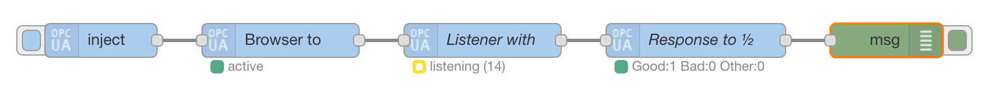
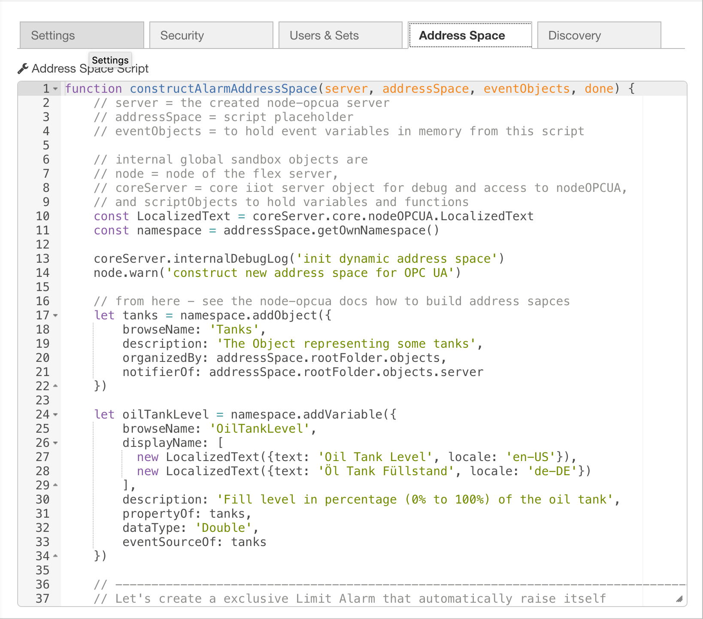
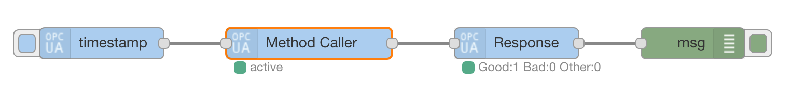
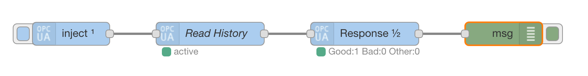
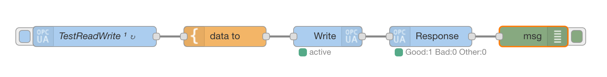
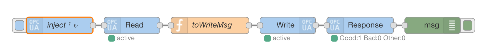
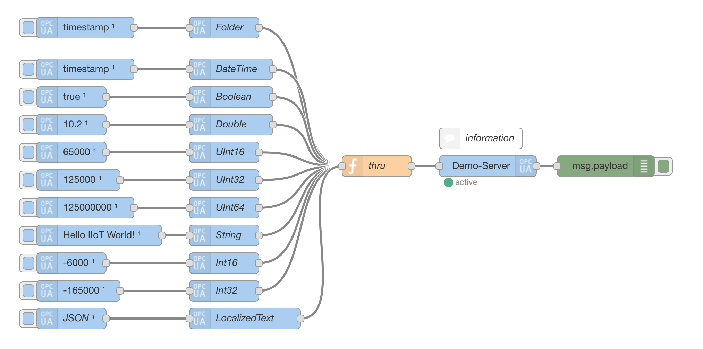
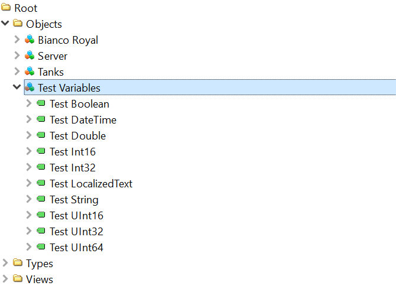
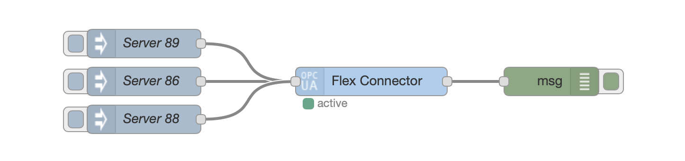

node-red-contrib-iiot-opcua
The IoT/IIoT OPC UA toolbox package for Node-RED based on node-opcua.
- v3.x is now LTS version until Oktober 2019 (branch 3.0)
- tested with Node.js v10 and Node-RED v0.19
- based on node-opcua v0.4
- extendable with node-opcua-isa95
If you like that contributor's package for OPC UA, then please give us your star at GitHub!
You could also help as a backer of the project.
Install
Run command on Node-RED installation directory.
npm install node-red-contrib-iiot-opcuaor run command for global installation.
npm install -g node-red-contrib-iiot-opcuatry these options on npm install to build, if you have problems to install
--unsafe-perm --build-from-source
To get a special version please set the version with @M.M.F:
npm install node-red-contrib-iiot-opcua@2.7.1or global with the -g option of npm. You get more help in the npm docs.
Contributing
Let's work together! Please, read and in best case accept CONTRIBUTING by your sign and send it via E-Mail. You could also just send a pull request or issues while testing, please!
Click here if you want to back the project!
Debug
Debugging on remote devices is important to help users. The verbose logging provides interesting points in different abstractions if IDE or console debugging is not possible.
Start debug with Node-RED in verbose (-v) mode to get a verbose logging:
DEBUG=opcuaIIoT* node-red -v 1>nodeREDIIoTOPCUA.log 2>&1or on local Node-RED
DEBUG=opcuaIIoT* node red.js -v 1>nodeREDIIoTOPCUAServer.log 2>&1Debug Options
Please, read the Wiki article
Wiki
Follow the white rabbit!
Your own address space model!
With the flex server you could create your own information model with the OPC UA address space.

Learn with the examples!
The server node contains demo objects and variables to start playing with OPC UA method call, read and write operations.
see Node-RED menu (right upper corner) -> Import -> Examples -> iiot opcua

... secure reading from OPC UA servers with your own key pairs ...

... and secure writing and moving data between OPC UA servers ...


... create your own variables and objects from events ...
| Node-RED | UAExpert / Client |
|---|---|
|  |  |
Reconnect via events with the Flex Connector!

Package Information
Known Issues and TODO's
Ideas
- methods calls
- complex
- dynamic
- structured object parameters
Errors
- more Bad status situations handling
- API changes to 0.4.+ bring some breaking changes in connection handling
- Please, test and report issues via GitHub!
License
The BSD 3-Clause License
That is a whole new Node-RED package started in 2017 based on the node-opcua v0.4 and the API documentation. The old copyrights by Mika Karaila are just to honor his pioneer work in the years 2015/2016 for Node-RED and OPC UA.
Important
This is not an official product of the OPC Foundation or Plattform Industrie 4.0.
Contribution node-opcua
I'd like to give special thanks to Etienne Rossignon for the node-opcua packages and very special for the node-opcua-isa95 package!